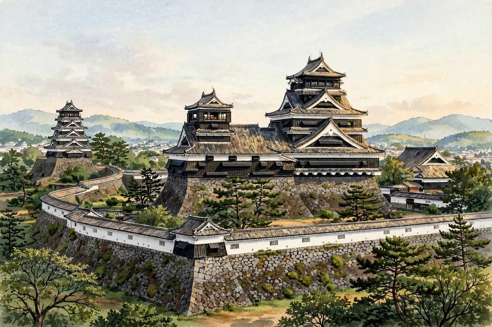

Kumamoto Castle's Road to Recovery: From the 2016 Earthquake to the Restored Keep and the Long Way to Full Restoration

We already have an article on Kumamoto Castle centered on the 'musha-gaeshi' curves of its stone walls. Here we change the angle and focus on the 'road to recovery' from the 2016 Kumamoto earthquakes. The restoration of Kumamoto Castle is also a major modern record for thinking about what it means to restore a castle.
【Built by Kato Kiyomasa, and the Seinan War】Kumamoto Castle was built in the Keicho era by Kato Kiyomasa, regarded as a master castle builder, and was praised as impregnable. In the Seinan War of 1877, in the Meiji period, government forces held the castle and withstood the attack of the Satsuma army led by Saigo Takamori. The keep and other buildings are said to have been lost to fire just before the war, but the stone walls and the Uto Turret survived.
【The Kumamoto Earthquakes and the Damage】In the Kumamoto earthquakes of April 2016, Kumamoto Castle also suffered great damage. Stone walls collapsed in many places, turrets were damaged, and roof tiles fell. The Uto Turret was a precious surviving turret, but after the earthquake it was decided that it would be dismantled and repaired.
【The Keep Restored, the Whole Castle Still to Come】The large and small keeps completed restoration in 2021 and are open, with the interior exhibitions also renewed. On the other hand, the complete restoration of the whole castle is said to require many long years, and work such as re-stacking the stone walls and repairing the turrets proceeds according to plan. Recording each stone of a collapsed wall one by one and returning it to its original position is a painstaking process unique to the restoration of cultural properties.
【Exam Study Points】This is covered in Chapters 4 and 5 of the textbook. Kumamoto Castle is a castle to fix in mind together with 'built by Kato Kiyomasa,' 'musha-gaeshi' and 'the two kinds of stone walls,' and also as a modern case of cultural-property restoration. Note the difference between the surviving Uto Turret and the restored keep.
Visit Kumamoto Castle and you can see the 'process itself' of restoration. Turn your eyes not only to its completed form but to the castle as it is being protected right now.
Recommended books for this article
Castle Guide
Samurai Castles: History / Architecture / Visitors' Guides
Hundreds of color photographs and close-up detail on Japan's most important surviving samurai castles — their history, design and military features, with guidance for visitors. The best single companion for castle sightseeing.
View at Barnes & NobleCheck the price at Barnes & Noble
Castle History
Japanese Castles 1540–1640
Author: Stephen Turnbull
The great castles of Japan's warring-states era: how the strongholds of the daimyo were built, defended and attacked, explained by the leading English-language historian of samurai warfare, with illustrations throughout.
View at Pickwick BookshopCheck the price at Pickwick Bookshop
Travel Guide
Lonely Planet Japan (Travel Guide), 19th Edition
Author: Lonely Planet
The standard Japan travel guide in its 19th edition — trip planning, itineraries, transport and on-the-ground detail. The practical backbone for a castle-and-shrine trip.
View at TargetCheck the price at Target
Book links on this page go to the retailers' product pages. Prices and availability are shown on the retailer's page.